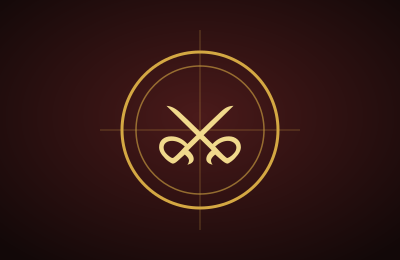
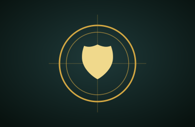
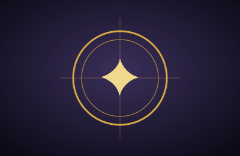

Chefes
Dicas e estratégias para Margit, Radahn, Malenia e outros desafios lendários.
Um blog de fãs para os Maculados das Terras Intermédias
O Chama Dourada é um blog de fãs dedicado a Elden Ring, o RPG de ação de mundo aberto da FromSoftware com roteiro de George R. R. Martin. Aqui você encontra guias para enfrentar os chefes mais temidos, ideias de builds para cada estilo de jogo e uma leitura da história das Terras Intermédias.
Escolha um dos conteúdos em destaque abaixo e siga a Graça.

Dicas e estratégias para Margit, Radahn, Malenia e outros desafios lendários.

Configurações de atributos e equipamentos para Força, Destreza, Magia, Fé e Arcano.

A Quebra, o Anel Prístino e os semideuses que disputam o Trono.